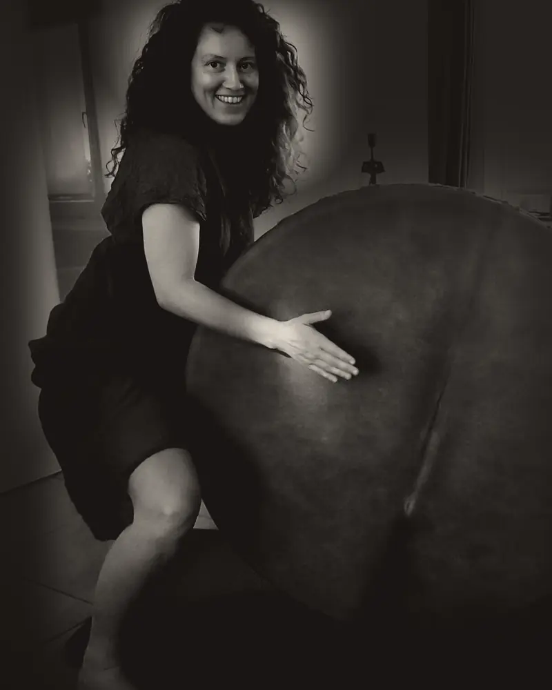

Expérience 01 · sans la vue
Que se passe-t-il si je te prive de la vue ?
Je t'emmène en nature à Nismes, les yeux bandés. Tu marches, tu danses, tu écoutes. Seul·e ou en groupe.
Le regard prend toute la place
Dans un monde où le visuel prédomine et accapare notre attention au quotidien, je t'invite à participer à une expérience vivante.
La vue se retire. Le reste se réveille : le sol sous tes pieds, le vent sur ta peau, la voix de l'autre, ton souffle.
Moins regarder. Plus ressentir.
Erika Wild propose des expériences sensorielles les yeux bandés, en nature, à Nismes (Viroinval, province de Namur). Séance individuelle : 75 € (1 h). Séance en groupe : 35 € par personne (2 h, 8 personnes maximum).
Expérience 01
Sans la vue
Je retire ce qui domine : le regard. Qu'est-ce qui peut alors naître ? Une seule question à la fois, puis vient l'expérience suivante.
- Marcher en nature
Les yeux bandés, guidé·e. Le terrain, les odeurs, les sons.
- Danser
Sans miroir, sans regard. Ce que ton corps veut.
- Musique et rythme
Écouter, frapper, chanter. Le rythme relie le groupe.
- Expression et impression
Ce qui entre par les sens ressort par le geste, la voix, le trait.


Je suis Erika
La forêt, la danse, le rythme, et me priver de la vue : c'est ce qui a enfin fait taire ma tête. Mon corps et mon intuition ont pu parler.
En résonance avec la nature et les gens, je crée des expériences qui touchent. Je suis formée en écopsychologie appliquée et en accompagnement de la respiration.


Ils et elles l'ont vécu
…she made me feel safe to give myself fully to the darkness and the connection with the Earth.
En jouant et en riant, en utilisant tous les sens, on se connecte à la nature et à la terre (littéralement aussi).
Un accueil chaleureux, une activité où le respect de chacun est primordial, chacun vient comme il est…
Ze geeft zoveel energie van haar zelf in haar sessies wat heel ontwapenend werkt. […] Je hoeft niks te doen, gewoon te zijn.
Après des ateliers précédents.
Comment ça se passe
- Lieu
- Nismes (Viroinval)
- Rendez-vous
- Parking du Fondry des Chiens
- Groupe
- 8 personnes maximum
- Aucune expérience en danse ou en musique.
- Tu peux retirer le bandeau à tout moment.
- Je te guide. Tu n'es jamais seul·e dans le noir.
Questions
Et s'il pleut ?
Il n'y a pas de mauvais temps, seulement de mauvais vêtements. On sort par tous les temps. En cas d'orage, on se met à l'abri à l'intérieur.
Que porter ?
Des vêtements qui peuvent se salir et de bonnes chaussures. On marche, on s'assoit au sol, parfois on touche la terre.
Et si je dois annuler ?
Tu peux annuler jusqu'à 48 heures avant la séance.